01苹果中国版 AI 敲定，千问进了 Siri 和写作工具
10 月 31 日，苹果中国官网和阿里巴巴几乎同时挂出同一件事：千问正式集成进 Apple 智能。传了大半年的靴子，终于落地。
一句话说清。从这天起，中国用户能在 Siri、写作工具、视觉智能里直接调用千问。功能 11 月 4 日随 iOS 开发者 Beta 开放测试，12 月随 iOS 27.3 正式推送。是否开启由用户自己定，发出去的请求和回复，阿里承诺不用于训练。
一句话记住：这不是接一个第三方 App，是把国产大模型塞进了 iPhone 的系统层。
- 10-31 苹果与阿里官宣，千问集成 Apple 智能，覆盖 Siri、写作工具、视觉智能三块入口。
- 11-4 随 iOS 开发者 Beta 测试，12 月随 iOS 27.3 正式向中国用户推送。
- 首批适配以支持 Apple 智能的机型为准，含 iPhone 15 Pro 系列、16 系列、iPhone Air 与折叠的 iPhone Duo，设备与账号地区均需为中国。
- 苹果之所以选千问，卡在三条硬门槛：监管合规、隐私红线、亿级流量承载。
- 这一批只是基础功能，不含 Siri AI 和 WWDC 2026 的下一代能力，iPad、Mac 还要等审批。
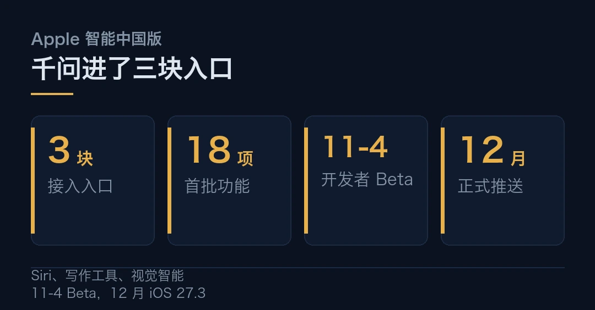
官宣之前，风声传了大半年
这件事其实早有伏笔。Apple 智能 2024 年就发布了，海外版接的是 ChatGPT 和 Google，可国行一直悬着。
麻烦在于，中国的监管不允许国行设备直接调用海外模型，必须接一个已完成生成式 AI 备案、数据境内闭环的国产模型。所以过去大半年，市场一直在猜苹果会选谁，百度、阿里、字节都进过传闻名单。
10 月 31 日这纸官宣，把答案钉在了千问上。
这其实是苹果的一个老难题，而且不只在中国。国行设备要跑系统级 AI，就得把海外那套逻辑重走一遍，另找一家国产模型顶上。选谁，不只是技术题，更是合规题。
监管这道门槛，先把「选谁」的问题砍掉了一半。
到底能用它做什么
先看具体能用它干什么。三块入口，各管一摊。
第一块是 Siri。用户可以借 Siri 直接调千问的知识库提问，问答、文档、照片都能问。关键的一条，是任何问题、文档和图片发给千问之前，都会先征得用户同意。
第二块是写作工具。系统级写作里多了一个「千问创作」（Compose with Qwen），能按任意主题生成内容，还能顺手生成配图。
第三块是视觉智能。相机对着眼前的东西，选「询问千问」，它告诉你这是什么。入口可以是相机控制键、操作按钮，或者控制中心。
注意一点，这次上线的是一整批端侧 AI 能力。除了千问这三块，还有实时翻译、照片消除、智绘表情、自然语言搜索、通知摘要、备忘录音频转录摘要、通话文本摘要等十几项。但苹果说得很清楚，这一批不包含 Siri AI，也不含 WWDC 2026 上宣布的下一代功能。
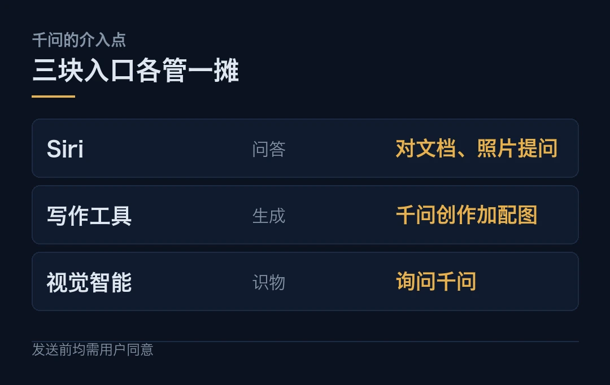
| 场景 | 千问的介入点 | 上线节奏 || --- | --- | --- || Siri | 调知识库问答，可对文档、照片提问 | 11-4 Beta || 写作工具 | 「千问创作」按主题生成内容与配图 | 12 月正式 || 视觉智能 | 「询问千问」识别眼前物体 | 12 月正式 |
还有个隐藏的变化容易被忽略。以前用 AI，你得先打开某个 App；现在它长在系统里，藏在 Siri、写作、相机里，随叫随到。入口变了，用户习惯就会跟着变。
千问也不是临时抱佛脚。它是阿里通义系列的主力，开源版本在开发者里刷过大量存在感，多模态、中文理解、长上下文都算强项。对苹果来说，选一个成熟、能扛量、还愿意按它的隐私规矩来的模型，比选一个参数最大的更实际。
苹果为什么必须选国产
为什么最后是千问？苹果的说法很克制，只讲「合作」。但拆开看，是三道上岗考试，缺一不可。
第一道是监管。这是入场券。国行不能碰海外模型，必须接已备案、数据不出境的国产模型。阿里云有完整的国内云资质和隔离算力集群，数据链路闭环。今年 7 月，网信办已把含 Apple 智能在内的 7 款手机端侧生成式 AI 服务做完备案。
第二道是隐私。苹果的红线是三条：用户数据不能拿去训练，不能长期留存，不能做用户画像。阿里给的承诺是，千问进来的请求不进公版模型训练池，还为苹果单独开了物理隔离的独立租户集群。
能不能守住这条线，比模型多聪明更要紧。
第三道是流量。苹果在中国的存量设备是亿级，峰值并发吓人。阿里云常年扛「双十一」那种洪峰，弹性扩容和故障冗余被真金白银验证过。这种「不出事」的能力，平时看不见，关键时刻要命。
对阿里来说，这张入场券值钱。换回来的是，全球最挑剔的硬件公司，把系统级 AI 的底座交给了它。这份背书，比什么广告都硬。
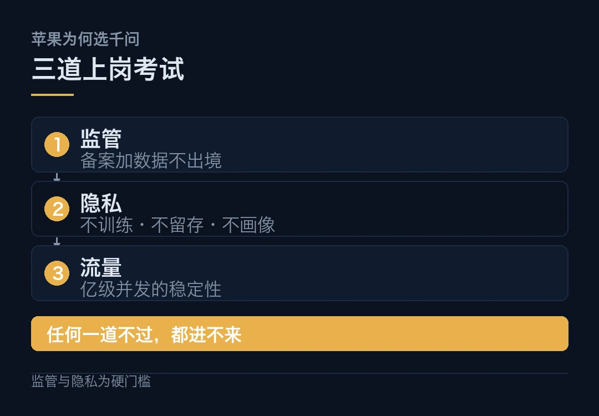
半张底牌
但别急着把这当成终局。它更像半张底牌。
第一，功能是打头阵的一批，不是全部。Siri AI 和下一代能力都没来，iPad 和 Mac 还要等监管审批。真正的完整体验，得等明年。
第二，措辞值得玩味。苹果说的是在「部分 Apple 智能体验中」加入千问支持，并没有说全盘替换。这既是对合作的描述，也是给自己留的余地。
第三，这是一份长期账。为苹果单开的物理隔离集群、不训练的承诺，短期是投入，长期是负担。拿到入场券的代价，是长期兜底。
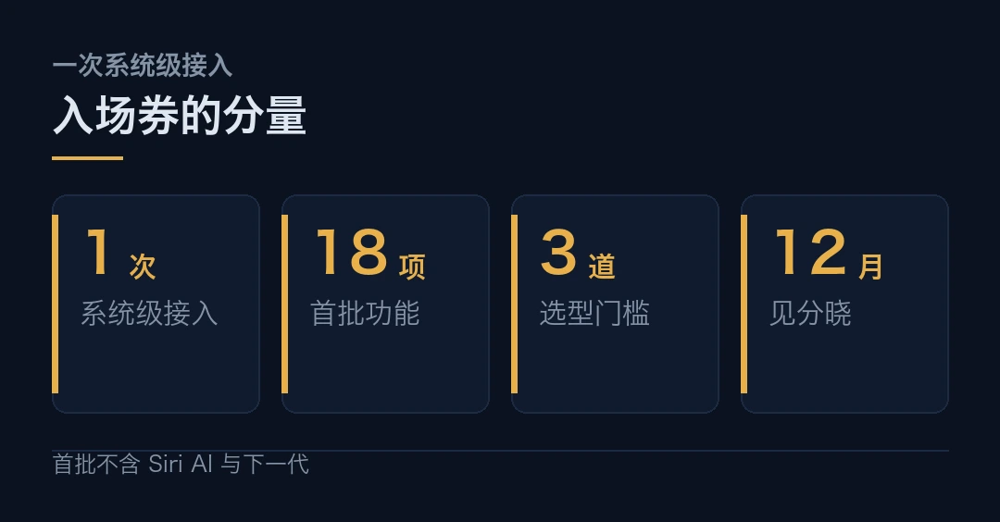
第四，体验还得用户用脚投票。系统层接个大模型，和它好不好用，是两回事。中文理解、多轮上下文、和 iOS 的磨合，都要实测。
那这件事的分量到底在哪？它第一次把国产大模型，摆到了全球顶级消费硬件的系统层。 不再是塞一个第三方 App，而是嵌进 Siri、写作、视觉这三块最常用的入口。这层意义，比参数和跑分都重。
至于它好不好用，12 月见分晓。
千问集成的功能范围、时间表（11-4 开发者 Beta、12 月 iOS 27.3）、适配机型与「请求不用于训练」的承诺，来自苹果与阿里巴巴官方口径；「18 项功能」为多家媒体对首批功能的统计口径。
苹果选千问的三条原因（监管、隐私、流量）为媒体与专家分析，非苹果官方声明。首批功能不含 Siri AI 及 WWDC 2026 下一代能力，以苹果官网提示为准。
本文仅作事实转述，不构成任何投资建议。
本文信息来源
- 苹果中国官网 — Apple 智能即将在中国推出（2026-10-31，官方） · apple.com.cn
- 阿里巴巴集团 — 与 Apple 达成合作，千问集成至 Apple 智能（2026-10-31，官方） · alibabagroup.com
- Apple Newsroom — Apple Intelligence 与中国合作伙伴（2026-10-31，官方，英文） · apple.com
- 新华网 — Alibaba's Qwen AI model to integrate into Apple Intelligence（2026-10-31，英文） · chinaview.cn
- 澎湃新闻 — 苹果官宣中国大模型用千问（2026-11-01） · thepaper.cn
- 南方+ — 官宣，阿里巴巴与 Apple 达成合作（2026-10-31） · nfnews.com
- 环球网 — 确认接入阿里千问，Apple 智能即将在国内上线（2026-11-02） · toutiao.com
- AIBriefing — Apple brings Alibaba's Qwen to 18 Apple Intelligence features（2026-11-01，英文） · aibriefing.dev
- 中国新闻网 — 苹果中国 AI 待落地（2026-11，中文） · chinanews.com
02Claude Code 扩展被植入后门，约五千开发者中招
一个「官方」扩展，在应用商店里躺了大约 11 个小时。装过它的人，机器里可能已经多了一把不该有的钥匙。
10 月 29 日，安全公司 Phorion 发现，有人给 Cursor 市场里的 Claude Code for VS Code 塞了个后门。涉及的版本号是 2.1.312 和 2.1.313。
一句话说清。这是一次供应链攻击，不是模型出错。有人在 Cursor 的分发环节动了手脚，把篡改过的扩展当成官方更新推了出去，装上的开发者机器会被植入持久化的 SSH 后门。
一句话记住：扩展就是程序，你把「随时自动更新」的权限，交给了一个你并不认识的陌生人。
十一个小时，一把假钥匙
时间线是这么走的。太平洋时间 10 月 29 日凌晨 2 点 27 分到下午 1 点 35 分，这两个版本在 Cursor 市场上可下载，前后约 11 个小时。据 The Register 报道，受影响的开发者可能多达约五千人。
发现之后，Cursor 立刻下架了这两个版本，还顺手把整个扩展市场短暂关停排查，确认没有别的扩展被同样动手脚，然后轮换了自家的密钥才恢复。攻击者的服务器，最后被云服务商切断。
Anthropic 的回应很干脆：入侵没发生在我们这边。一名技术人员公开说，是有人拿到了 Cursor 市场的发布权限，上传了一个不是他们构建、也不是他们发布的篡改版本。官方渠道，包括 VS Code 市场和 npm 上的正式包，都不受影响。
载荷拆开看
Phorion 的拆解很清楚。恶意代码是一段立即执行函数，直接贴在正常压缩包的最前面。只要 Node 一加载这个文件，它立刻跑，根本不等你点开扩展、不等它正常启动。
它干了四件事。
第一件，给自己留钥匙。往 `~/.ssh/authorized_keys` 里追加一把攻击者控制的公钥，注记写着 `svc-telemetry`。目录权限改成 0700，文件改成 0600，做得像正经运维。
第二件，开门。试图在本机把 SSH 服务打开，好让外面能连进来。
第三件，拉隧道。开一条反向 SSH 通道，连到攻击者服务器 134.209.82.225 的 22 端口。
第四件，装持久化，还上报。macOS 上装 LaunchAgent，Windows 上装计划任务，Linux 上装 cron。同时把主机名、用户名、公网 IP，以及最多 40 个「看着像密钥或云凭据」的环境变量名，发到 8099 端口。
注意一点，这四件事里，最值钱的是第四件。它没搬走你的代码，先把你机器长什么样、有哪些钥匙，报了回去。
最值钱的不是代码，是你机器上有哪些钥匙。
为什么一个扩展能有这么大权限？因为扩展就是程序，它跑在你的 IDE 里，用的是你的用户身份。装一个扩展，等于同意它读文件、跑命令、连网。这次的后门更狠，连「打开扩展」这一步都省了，模块一加载就跑了。
这类攻击不是孤例。流行的编码 agent，比如 Cursor 系、Cline、Roo-Code，大多靠扩展或插件接入。只要分发环节被拿下，一个补丁就能同时打进成千上万台开发机。Phorion 把这次定性为「供应链攻击」，而不是模型漏洞，原因就在这儿。
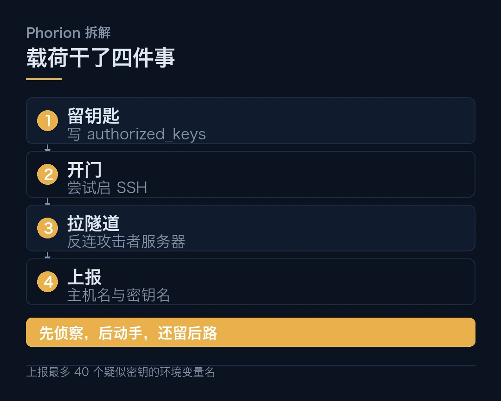
一个 bug，救了多数人
故事有个黑色幽默的转折。
脚本本来想开 SSH，但它判断「SSH 开没开」的方式有 bug。它调用一条需要管理员权限的命令，普通用户跑会报错，可这条命令报错时退出码还是 0。脚本一看不是「Off」，就以为 SSH 早就开着，于是跳过了开启那一步。
结果就是，在最常见的 Mac 和没给管理员权限的 Windows 上，反向隧道根本没建起来。门没开成。
但别急着高兴。钥匙还是插上了，持久化还是装了，侦察数据还是报回去了。没开成门，不等于没进过屋。
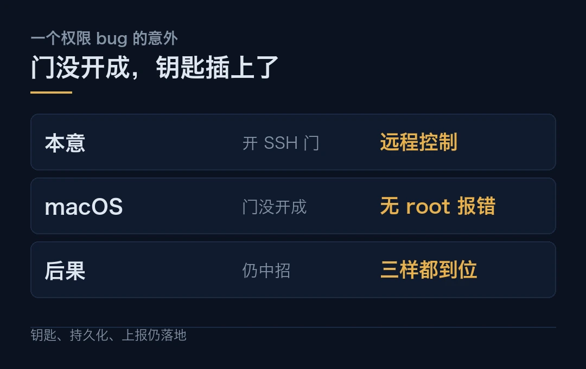
系统提示为什么防不住
这件事真正扎人的地方，不在这一个扩展，而在一个普遍的误区。
说白了，很多团队以为，给 agent 写几句「不要外传数据」的系统提示，就等于上了锁。可大模型是个推理引擎，不是执行边界。它会被间接提示注入带跑，会在长上下文里忘掉早先的规矩，更拦不住一段直接跑在你系统权限里的扩展代码。
安全得落在确定性代码上，不能落在模型的自觉上。 白名单校验出站域名、扫描载荷里的密钥特征、危险操作走人工确认，这些写死的规则，才挡得住。
补救与教训
先说补救。卸载扩展没用。Phorion 明确说，载荷落下了独立脚本，卸载清不掉。你得手动来。
```bash
# 先查机器有没有中招：看 authorized_keys 里有没有可疑注记grep -qs svc-telemetry ~/.ssh/authorized_keys && echo FOUND || echo clean
# 再比对指纹（Cursor 公告给出的攻击者指纹前几位）ssh-keygen -lf ~/.ssh/authorized_keys | grep 0Z6R+DF64Do2nwQic```
任一条命中，就隔离机器、删掉那行公钥、杀掉指向 134.209.82.225 的 ssh 进程、清掉持久化文件，再把这台机器能碰到的凭据全部轮换一遍。
再说教训。别只看「官方」两个字。扩展本质是程序，它跑起来就是你。三道防线值得马上补上。关掉开发机的自动更新，或者至少别让它无人值守地更新；从发布方自己的渠道装，并核对版本号；把长期密钥换成短期、最小权限的云凭据。
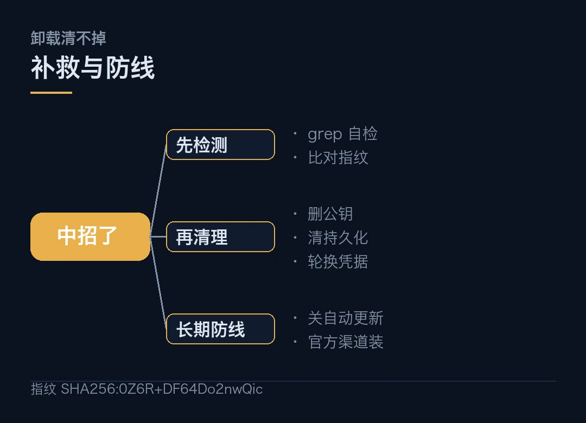
为什么要这么较真？因为攻击面已经从模型，挪到了你每天点「安装」的那一下。 模型再谨慎，也管不住你装进来的一个扩展。
受影响版本 2.1.312 与 2.1.313、后门在架约 11 小时、载荷行为（追加 SSH 公钥、反向隧道、持久化、上报环境变量名）、macOS 逻辑缺陷，均来自 Phorion 拆解与 Cursor 公告；「约 5000 开发者受影响」为 The Register 报道口径，不是官方统计。
Anthropic 称自家系统并未遭入侵，官方渠道（VS Code 市场、npm 正式包）不受影响，此为其说法。攻击者如何取得 Cursor 市场发布权限，目前仍未公开。
本文仅作事实转述，不构成任何投资建议。
本文信息来源
- Phorion — Claude Code for VS Code extension backdoor 分析（2026-10-31，一手，英文） · phorion.com
- Cursor — Security notice on the Claude Code extension（2026-10-31，官方，英文） · cursor.com
- Anthropic — Statement on the Claude Code extension compromise（2026-10-30，官方，英文） · anthropic.com
- The Register — Anthropic: that Claude Code extension compromise couldn't be us（2026-10-30，英文） · theregister.com
- KryptonForge — Fake Claude Code Extension on Cursor Marketplace Planted an SSH Key（2026-11-02，英文） · kryptonforge.in
- ClawdBytes — Malicious Claude Code Extension Found in the Wild（2026-11-01，英文） · clawdbytes.com
- DevBytes — Official Claude Code VS Code extension turns dev machines into backdoors（2026-11-02，英文） · devbytes.co.in
- PAN — Phorion finds SSH backdoor in Claude Code for VS Code extension（2026-10-31，英文） · pan.parallax.kr
03苹果首款触屏 Mac，屏幕换成了双层 OLED
苹果做了件它抵制了很多年的事：让 Mac 的屏幕，能用手摸了。
10 月 29 日凌晨，苹果发布新款 MacBook Pro。这是 MacBook Pro 第一次支持触控，屏幕也第一次换成了一种叫 PROLED XDR 的双层 OLED。同时发布的，还有换了 OLED 屏的 iPad mini。
一句话说清。新 MacBook Pro 用双层串联 OLED，峰值亮度 2000 尼特，10 到 120 赫兹自适应，搭 M5 Pro 或 M5 Max 芯片。国行 22999 元起，11 月 6 日正式发售。iPad mini 则上了 8.5 英寸 OLED 和 A20 Pro。
一句话记住：这不是加一块屏，是苹果推翻了自己对笔记本触控的立场。
苹果守了几十年的规矩，破了
麻烦在于，苹果一直不愿意给笔记本上触屏。乔布斯当年的说法是，手指够到屏幕，手臂会累；库克时代也没松口。这一坚持，坚持了十几年。
市场把它推翻了。IDC 的数据是，2025 年触屏笔记本已占全部笔记本出货量的 16%，行业均价约 1009 美元，而苹果的产品均价远高于这条线。当触屏从「可有可无」变成「别人都有」，坚持就变成了落后。
不是苹果想通了，是市场不等人。
现在，这条线自己踩过去了。屏幕能触控之外，苹果还改了两处工程细节。苹果官方称，触控传感器不再盖在面板表面，而是直接内嵌进显示层，借此降低延迟。铰链也重新设计过，让往回戳屏幕时不至于晃。
它能用来干什么？滚动网页、二指缩放照片、拖放幻灯片、转 3D 模型、弹虚拟乐器。苹果还说，macOS 会把触控输入翻译成「点按」，让很多现有应用不用改就能用。
注意一点，这是「能用」，不是「为触控重做了一套系统」。真正为手指设计过的，是苹果自家那几款创作应用。
PROLED XDR 强在哪
真正的主菜是那块屏。
PROLED XDR 本质是「双层串联 OLED」，一块面板里叠了两层红绿蓝发光层。普通笔记本 OLED 只有一层，峰值常在 600 到 800 尼特；叠两层之后，这块屏能做到 2000 尼特峰值，普通笔记本屏的 mini-LED 版本也就 1600 尼特。
好处不止亮度。双层各自用更低的电流工作，发光材料老化更慢，这正好戳中 OLED 的老毛病，烧屏。对一块天天亮着的专业屏来说，这一点比峰值亮度更值钱。
还能当专业参考屏
它还给专业用户备了几样东西。支持 DICOM 校准模式，能看医疗影像；支持 genlock，能和多机位视频同步。屏幕上那处刘海也没了，换成了灵动岛。被砍掉快十年的发光 Apple logo，也回来了。
亮度是参数，不烧屏才是本分。
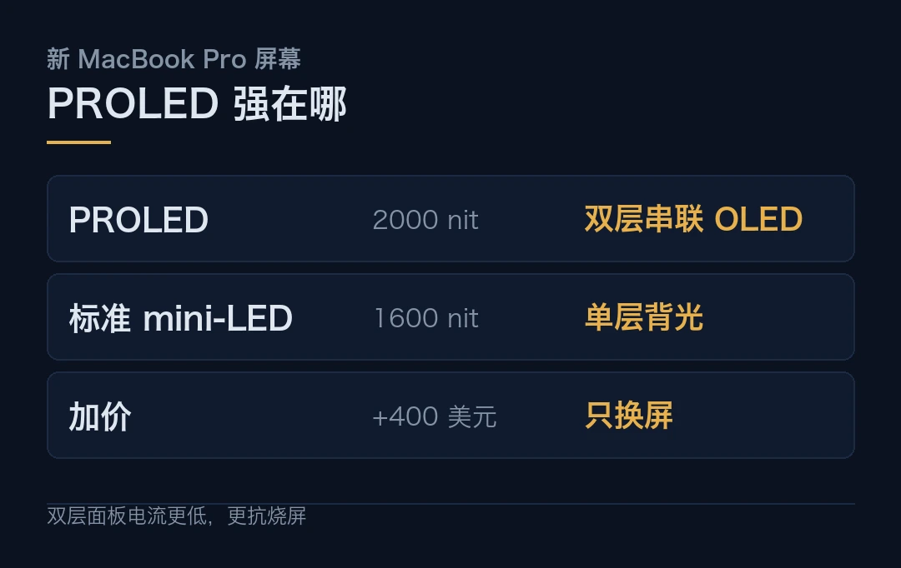
价格与规格
价格分得很细。国行四档：14 英寸 M5 Pro 22999 元，16 英寸 M5 Pro 27999 元，14 英寸 M5 Max 36999 元，16 英寸 M5 Max 38999 元。美价对应 2899、3399、4499、4799 美元。
有个数字得单拎出来。苹果同时还在卖老款标准版 MacBook Pro，用的是 mini-LED 屏、同样 M5 Pro/Max 芯片、没有触控，14 英寸卖 2499 美元起。也就是说，PROLED 这块屏，等于加价 400 美元。
配置上限也拉到顶了，苹果官方给出的顶格是 128GB 统一内存、16TB 存储；16 英寸 M5 Pro 续航标称最长 24 小时，30 分钟能充到一半；机身还轻了，14 英寸 1.38 公斤、16 英寸 1.82 公斤。
还有个细节容易被忽略。这台机器整体 55% 用回收材料，机身为 100% 回收铝，电池为 100% 回收钴，还头一回在电容里用上 100% 回收钽。
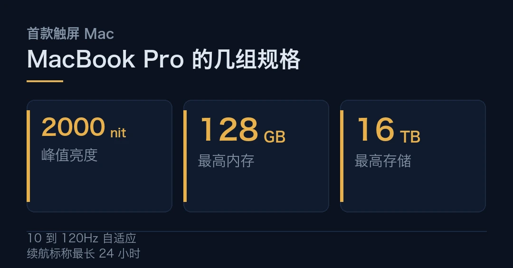
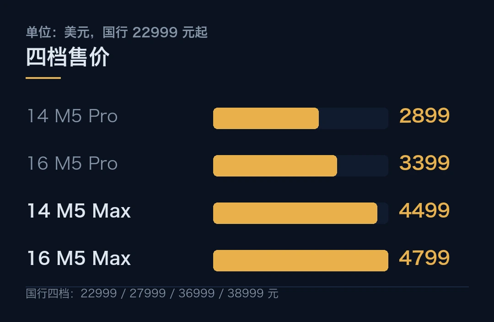
iPad mini 也换了 OLED
顺带说下 iPad mini。这次它换上了 8.5 英寸 OLED 屏和 A20 Pro，观感比老 LCD 更通透。
但别只看屏幕。128GB 和 256GB 版本用的是「减配版」芯片，少一个 CPU 核、NPU 性能砍半，只有 512GB 才给满血。屏幕刷新率也停在 60 赫兹，没跟上 120。
同一台机器，存储决定你有几成算力，这一手留得不太体面。
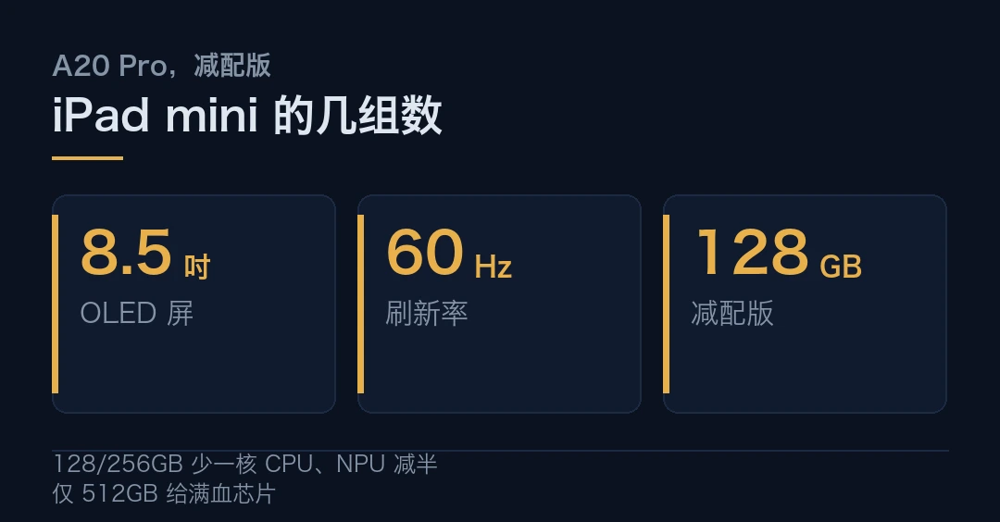
冷静面
说白了，热乎劲儿过去，还是得泼点水。
第一，触控是「能用」，不是「好用」。macOS 把触摸翻成点按，现存应用大多只是「不报错」，离真正顺手还有距离。手臂够屏幕累不累，用久了才知道。
第二，标准版可能更划算。这 400 美元买到的是双层 OLED、2000 尼特、逐像素黑、on-cell 触控、灵动岛、DICOM 与 genlock；买不到的是性能，两款用的是一模一样的 M5 Pro/Max。如果你的活不靠色准、也不靠触控，标准版就是更划算的选择。
第三，双层 OLED 的寿命，得时间来验。它理论上抗烧屏更强，但一块 2000 尼特的屏长期高亮，实际衰减还得看几年后的返修率。
第四，iPad mini 那手「按存储减配」，诚意打了折。想要满血芯片，就得多掏钱上大存储。
那这台机器到底意味着什么？苹果终于承认，触控这条路，笔记本也得走。 但它走得很克制，把触控藏进一块更亮的屏里，而不是重做一套系统。这是一次补课，不是一次革命。
至于这课补得好不好，11 月 6 日第一批用户上手，就有答案了。
PROLED XDR 的规格（双层串联 OLED、2000 尼特峰值、10 到 120 赫兹、DICOM 与 genlock）、价格（国行 22999 元起、美价 2899 美元起）、续航与重量，均来自苹果官方；「标准版便宜 400 美元、芯片相同」来自苹果在售机型对照。iPad mini 的减配细节（128/256GB 少一核 CPU、NPU 减半、60 赫兹）来自媒体报道，以苹果官网配置为准。
本文仅作事实转述，不构成任何投资建议。
本文信息来源
- 苹果中国官网 — MacBook Pro（PROLED XDR 显示屏）（2026-10-29，官方） · apple.com.cn
- Apple Newsroom — MacBook Pro 与 iPad mini 发布（2026-10-29，官方，英文） · apple.com
- 苹果中国官网 — iPad mini（2026-10-29，官方） · apple.com.cn
- GIGAZINE — Touch-enabled PROLED XDR MacBook Pro, November 6（2026-10-29，英文） · gigazine.net
- Tech Times — Apple Launches First Touchscreen Mac: MacBook Pro PROLED XDR（2026-10-29，英文） · techtimes.com
- 凤凰网 — 苹果推触屏 MacBook Pro，灵动岛首次登陆 Mac（2026-10-29，中文） · original.ifeng.com
- 红星新闻 — 22999 元起售，苹果发布新品（2026-10-29，中文） · toutiao.com
- IT之家 — 苹果发布首款触屏 MacBook Pro（2026-10-29，中文） · ithome.com
04科技速览，古猿改写起源，Anthropic 冲万亿，超声打脑癌
今天的速览，三条。一条讲一块下颌骨怎么改写人类起源，一条讲 Anthropic 那场万亿级 IPO，一条讲用声波和纳米颗粒围攻最凶的脑癌。
海外 · 一块下颌骨，把人类起源往北挪了
先看科学这条。埃及北部一片叫瓦迪莫格拉的荒漠里，出土了一块下颌骨和几颗牙。研究者给它取名 Masripithecus moghraensis，意思是「埃及的猿」。
它活在约 1700 万到 1800 万年前。这是北非第一次发现可靠的类人猿化石。
一块下颌骨，能改写什么？改写的是「我们这类猿，最早在哪儿」。麻烦在于，过去几十年，人类起源的故事主要靠东非的化石来讲。讲得久了，大家默认起点就在东非。
这次的系统发育分析，用了化石与现生类人猿的解剖数据、现代物种的基因数据，再加上地质年代。结论是，这种埃及猿，比东非任何早中新世物种都更靠近现代类人猿的共同祖先。
换句话说，长臂猿、猩猩、大猩猩、黑猩猩和我们这支，最后那个共同祖先，可能住在北非和中东，而不是东非。
注意一点，它本身不是人类的直接祖先，也不是哪一支现代猿的直接祖先。它更像一个路标，把「起源中心」这块牌子，往北挪了一格。
这套研究发表在《科学》杂志上，论文是今年 3 月的事，本周 ScienceDaily 又把它顶上了头条。
找错了地方几十年，往往不是眼力问题，是没人往那边看。
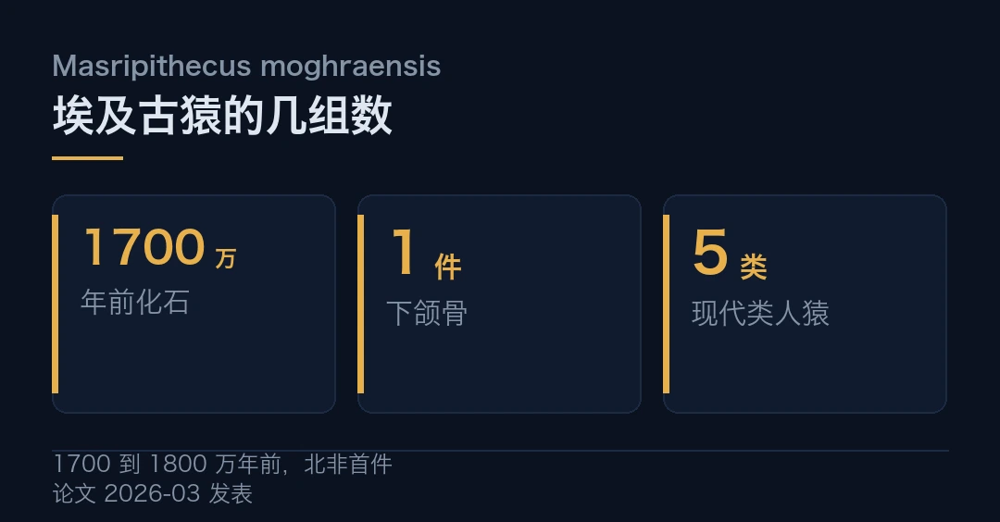
海外 · Anthropic 递表，万亿级 IPO 开跑
再看资本。Anthropic 10 月 26 日向美国 SEC 递交 S-1，计划在纳斯达克上市，代码「ANT」。市场给的估值区间是 1.2 万亿到 2 万亿美元，募资最高可能到 1000 亿美元。
如果按上限落地，它会超过 SpaceX 今年 6 月创下的约 1.77 万亿美元估值纪录，跻身历来最大的 IPO 之一。路演定在 11 月 9 日那一周，交易最早 11 月 16 日那一周开始。
账本摊开，很扎眼。2026 上半年营收约 163 亿美元，同比涨约 13 倍；净亏损 807 亿美元，但大头是估值上升带来的非现金会计调整，不是真烧掉的现金。更关键的一笔，是二季度它第一次报出运营盈利，9.74 亿美元。
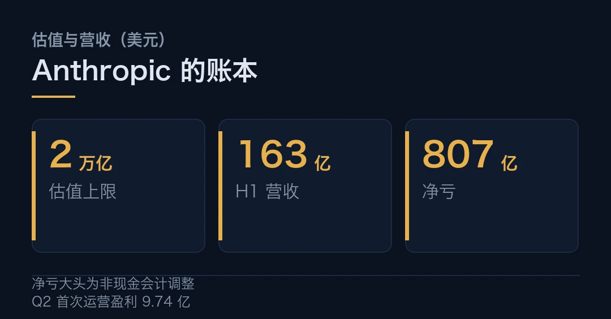
风险也写在明面上。文件里承诺的算力开支高达六千多亿美元，其中给 Google 的到 2033 年约 1150 亿、给 SpaceX 约 1205 亿。七位联合创始人靠特殊股权握着过半投票权，公开股东拿了经济份额，却没什么话语权。
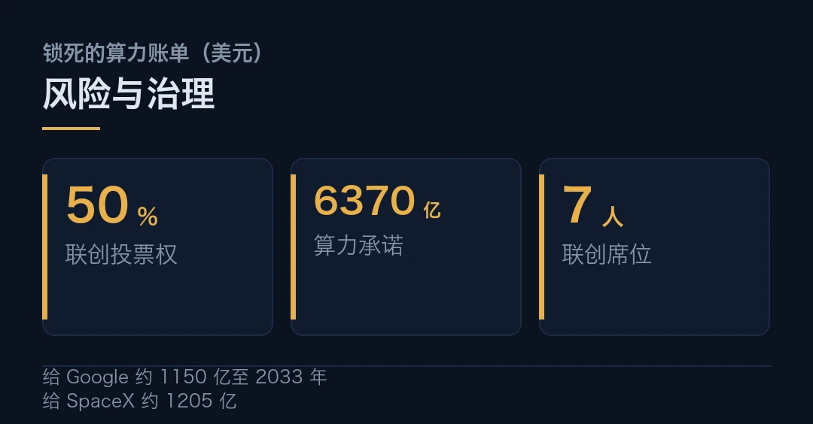
估值可以讲故事，锁死的算力账单才是真命题。
顺带说个市场反应。S-1 一递，一批「新云」公司的股价当天大跌，最多跌三成。资金正从「卖铲子」往「直接押模型」那边挪。
海外 · 用声波和纳米颗粒，围攻最凶的脑癌
最后一条，医学。弗吉尼亚大学的团队，想了个新打法对付胶质母细胞瘤。
这是最凶的脑癌之一。它长得快，还往周围脑组织里钻，手术很难切干净。能用的手段一直有限。更难的是，它不是单一基因驱动，只堵一条通路，常常没用。
对付多头驱动的病，不能只堵一条路。
他们的办法，是三样东西配合。聚焦超声，负责把能量精准聚到肿瘤那一点；纳米颗粒，把治疗物质运过去；microRNA，去同时压制好几个驱动肿瘤生长的基因。
说白了，就是用声波开路，让纳米颗粒把「多靶点」的药送到位，一次打几个点，而不是一次只堵一个。
这套方案目前还是实验阶段，离进人体、验证安全有效，还有距离。但对这种几乎没什么好办法的病，多一条新路，总是好事。
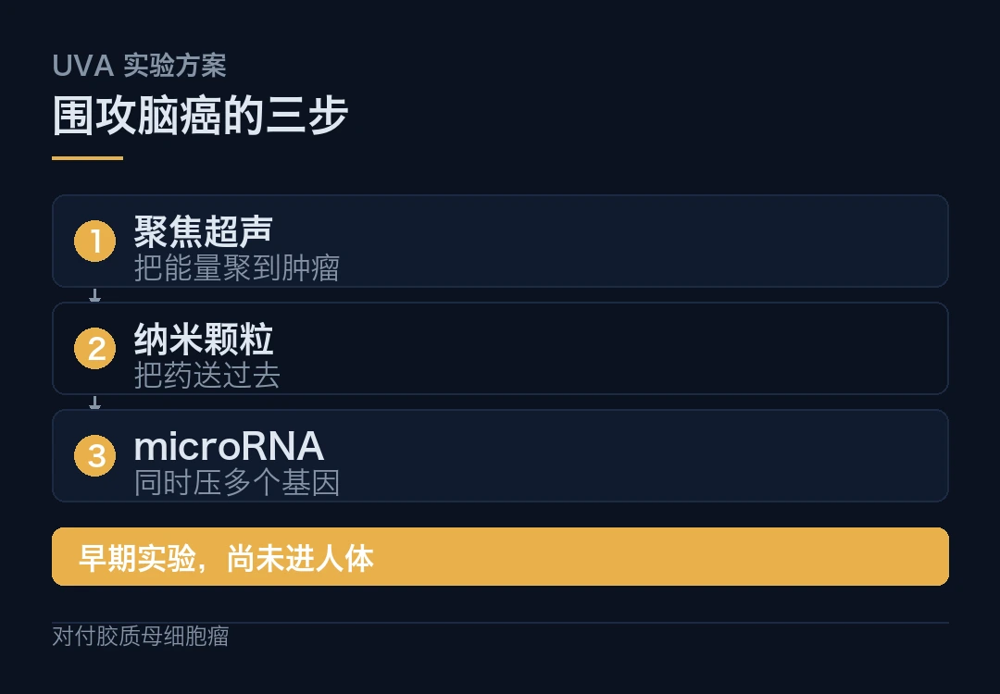
那么，这三条放一起说明了什么？顺着看，科学在把「我们从哪来」的坐标往北挪，资本在给「AI 值多少钱」重新定价，医学在拿新工具啃最硬的骨头。三条线不相干，却都在做同一件事，把旧结论再验一遍。
埃及古猿研究由曼苏拉大学脊椎动物古生物学中心与美国南加州大学等团队完成，2026 年 3 月发表于《科学》，本周经 ScienceDaily 重新报道；「北非与中东或是现代类人猿共同祖先的起源地」为研究推论，非定论。
Anthropic 的 S-1 提交（10-26）、代码 ANT、估值区间、募资规模、路演与交易时间、营收与亏损、算力承诺，来自招股文件与相关报道（中国经济网、中国新闻网、A47 News）；净亏损中大部分为会计调整。「新云股价跌三成」为市场反应报道。
胶质母细胞瘤的「聚焦超声＋纳米颗粒＋microRNA」方案来自弗吉尼亚大学团队，经 ScienceDaily 报道，属早期实验，尚未进入人体试验。
本文仅作事实转述，不构成任何投资建议。
本文信息来源
- Science — Masripithecus moghraensis 与类人猿起源（2026-03-26，一手，英文） · science.org
- ScienceDaily — Ancient Ape Fossil in Egypt Could Rewrite the Story of Human Origins（2026-11-01，英文） · sciencedaily.com
- ScienceDaily — Scientists Use Sound Waves to Deliver a New Attack on Deadly Brain Cancer（2026-11-01，英文） · sciencedaily.com
- Anthropic — S-1 注册声明（2026-10-26，一手，英文） · sec.gov
- 中国经济网 — Anthropic 万亿级 IPO 前瞻（2026-11-01，中文） · intl.ce.cn
- A47 News — Anthropic S-1 Filing Targets $2T Valuation（2026-11-01，英文） · a47news.ai
- 中国新闻网 — Anthropic 冲刺大规模 IPO（2026-11-01，中文） · m.chinanews.com
- ScienceOfficial — Sound Waves and Nanoparticles Target Deadly Brain Cancer（2026-11-01，英文） · scienceofficial.org
- Anthropic — 公司官方公告（2026-10，一手，英文） · anthropic.com
本文首发于公众号「YITENG」。原文：daily.html
留言